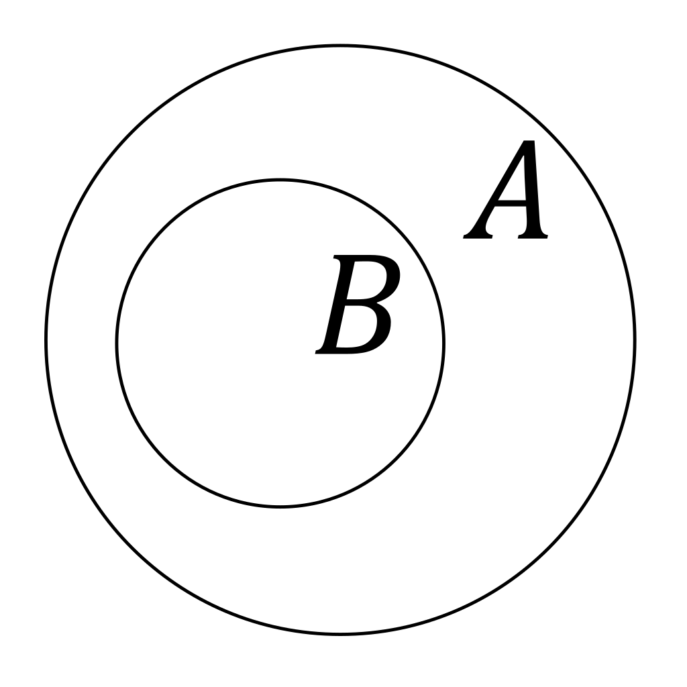

“
If I have seen further it is by standing on the shoulders of Giants.
The mathematics of infinitesimals
Set is a collection of well defined objects(or entities).
A subset is a collection of elements where every single element is also contained within a larger, parent set. If set B is a subset of set A, it is denoted as B ⊆ A.

The Cartesian product of two sets,say A and B (denoted A × B), is the set of all possible ordered pairs where the first element is from A and the second is from B. It essentially pairs every member of the first set with every member of the second set.
A relation R from set A to set B is formally defined as any subset of the Cartesian product A × B (denoted as R ⊆ A × B). It establishes a relationship between elements of two sets based on a specific rule or condition.
The domain of a relation is the set of all first elements from the ordered pairs in R (elements from set A that actually map to something). The range is the set of all second elements that are actively paired (elements in set B that have an incoming map).
Unlike a function, a relation is completely unrestricted: an element in A can map to multiple elements in B, or to absolutely nothing at all. It is the raw, unrefined framework of mathematical mapping.
A function is a relation between a set of inputs (the domain) and a set of permissible outputs (the codomain) where every single element in the domain is related to exactly one output in the codomain.
A limit analyzes the dynamic behavior of a function near a point, rather than exactly at that point. It determines the single value a function approaches as the input gets infinitely close to a target.
If we take the input x sufficiently close to a constant c (without letting x = c), then the output f(x) approaches arbitrarily close to the value L
We denote this fundamental relationship using the limit notation below:
Differentiation is the mathematical operation used to calculate the instantaneous rate of change of a dependent variable with respect to an independent variable.
We express this dynamic rate of change using the notation below:
This notation was designed by the mathematician Gottfried Wilhelm Leibniz. He viewed the derivative dy/dx not as a single abstract symbol, but as a literal ratio of two infinitely small changes (infinitesimals). This brilliant framework allows us to treat a curved line as if it is perfectly straight at a microscopic level.
Integration is the continuous analog of summation. While discrete summation adds distinct, separate values, integration sums an infinite number of infinitely thin quantities to find a total accumulation.
We express this continuous accumulation using the notation below:
The integration symbol ∫ was introduced by Gottfried Wilhelm Leibniz as an elongated letter "S", standing for the Latin word summa (sum). In the term ∫ f(x) dx, you are literally multiplying a height f(x) by an infinitesimal width dx and summing them all up over a continuous interval.
Around the 4th century BCE, Eudoxus developed, and Archimedes later perfected, the method of exhaustion. They inscribed and circumscribed regular polygons with an increasing number of sides to find the area of circle.
Archimedes used this method to bound the value of π and find the area of a parabolic segment. While it lacked the modern concept of a limit, it was conceptually the earliest form of integral calculus.
Independently, mathematicians in India developed highly sophisticated infinite series approximations for π and trigonometric functions, laying early foundations for power series.
René Descartes and Pierre de Fermat independently pioneer analytic geometry, bridging algebra and geometry by plotting algebraic equations on a coordinate plane, which provides the necessary visual space for calculus.
Sir Isaac Newton develops his system of calculus during the Great Plague of London, viewing variables as flowing quantities ("fluents") and their instantaneous rates of change as "fluxions"
Gottfried Wilhelm Leibniz independently derives his version of calculus in Paris, introducing the elongated "S" symbol ∫ for integration and the differential notation dy/dx based on sums of infinite microscopic differences.
Newton publishes Philosophiae Naturalis Principia Mathematica, utilizing his calculus insights to prove his universal laws of motion and gravitation, though he deliberately hides the raw calculus calculations behind classical geometric proofs.
Anglo-Irish philosopher Bishop George Berkeley publishes The Analyst, a scathing philosophical critique exposing the logical contradictions of infinitesimals, arguing that treating a value as non-zero to divide by it, and then treating it as zero to erase it, violates basic arithmetic logic.
French mathematician Augustin-Louis Cauchy publishes Cours d'Analyse, successfully replacing the vague concept of infinitesimals with a formal, verbal definition of the limit, defining continuity and derivatives as variables approaching a fixed numerical target.
Cauchy introduces a precise definition of the integral for continuous functions by using finite algebraic sums of rectangles, giving integration its own standalone logical footing.
Weierstrass introduces the strict, purely algebraic (ε,δ)-definition of a limit, removing all geometric, spatial metaphors like "approaching" or "flowing," and fully cementing calculus as a bulletproof logical branch of mathematical analysis.
Where the hidden mathematics of change powers the modern world.
Classical kinematics models trajectories assuming constant mass, but an active spacecraft continuously depletes its propellant during ascent. Because mass is a continuous variable over time, differential calculus is required to resolve the Tsiolkovsky rocket equation and calculate precise orbital insertions.
To simulate authentic physical environments, digital animation and modern graphics platforms evaluate instantaneous velocity and acceleration vectors in real time. Resolving these continuous differential equations prevents jagged, linear motion, producing smooth parabolic trajectories under gravitational fields.
Machine learning architectures train neural networks using an optimization framework known as Gradient Descent. Built on multivariable calculus, the algorithm calculates partial derivatives to map the local slope of a complex loss surface, systematically converging toward the coordinate of minimal error.
If I have seen further it is by standing on the shoulders of Giants.